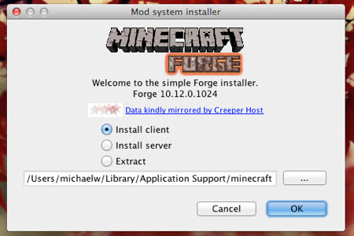

Ok, so you've got the game up and running, you've changed your character skin and given your Minecraft world a whole new look, but now it's time to take the next step. Mods are different from the tweaks covered above in that they fundamentally alter how the game functions, instead of just upgrading its looks. Because of this, installing mods is a slightly more involved process.
The first thing you need to do is install Minecraft Forge. Minecraft Forge streamlines the installation of mods by replacing the necessary files for you, rather than requiring you to swap out all the files each time you want to try a new mod. Find the Forge version that corresponds to your Minecraft install the wheel on the Forge website and download it.
Note: The vast majority of mods are Forge-compatible, and many actually require Forge in order to be used. There are still a few that don't workwith Forge, but since your chances of coming across an incompatible mod are rather slim, we're sticking with the Forge method here.
Now it's time to find a mod that you want to install. A community-compiled list of mods on MCF Modlist is a great place to start, but you can also browse for mods on the forums or sites like Planet Minecraft. Once you've found a mod you want to use, download the file.
For this tutorial we'll install a mod that gives in-game characters and animals on-screen life bars.
That's it! You now have everything you need to change the look, feel, and gameplay of one of the most popular PC games of all time. So experiment, try anything that sounds even mildly interesting, and keep an eye on new and exciting mods as they debut around the web.